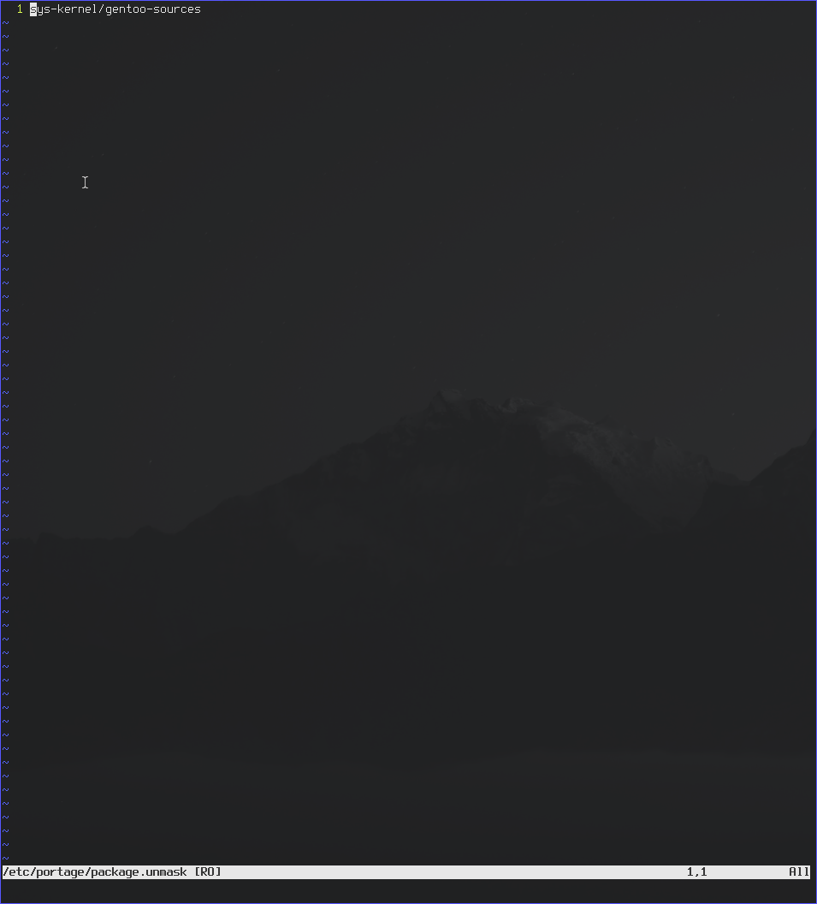
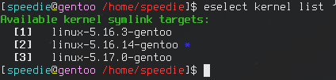

This guide will go over how to upgrade your kernel on Gentoo Linux to 5.17.0. If we check the sys-kernel/gentoo-sources package we can see that 5.17.0 is now available as of 2022-03-23. However it is not stable so we will need to unmask it.
First, let’s use the su command to change our user to root since many commands will require root permissions. You could use sudo/doas for each command but that’s painful.
Now, one pretty unstable way to do this is to simply have ACCEPT_KEYWORDS="~amd64" in /etc/portage/make.conf but this is not stable and will ALWAYS allow “untested” packages to be installed on your system. I and others prefer this but it’s not something you should use if you care about a stable system. Now, one pretty unstable way to do this is to simply have ACCEPT_KEYWORDS="~amd64" in /etc/portage/make.conf but this is not stable and will ALWAYS allow “testing” packages to be installed on your system. I and others prefer this but it’s not something you should use if you care about a stable system.
So instead, let’s individually unmask this package. Create /etc/portage/package.unmask and add sys-kernel/gentoo-sources to the file
Now, your sources are likely outdated so we will need to update them. To do this, run emerge --sync; emerge-webrsync
Once we’ve synced our repositories, let’s try running emerge --ask gentoo-sources. If the version is 5.17.0 or later then you’ve correctly unmasked and synced your repositories.

Now emerge this and wait.

Once the emerge is complete it’s time to back up our kernel configuration. cd /usr/src/linux and cp
Now that we have a backup of our previous configuration, it’s time to change our symlink. Run eselect kernel list
Now that we have a backup of our previous configuration, it’s time to change our symlink. Run eselect kernel list
Then run eselect kernel set

cd /usr/src/linux; cp /home/
This string of commands will copy the kernel config to the 5.17.0 kernel directory. The make olddefconfig will use your old kernel and set the new settings newer kernels offer to the defaults. This should be fine unless you NEED to change them.
Once this is complete, make sure your /boot is mounted and then run make -j$(nproc); make install to compile the kernel and copy it over to your /boot partition.
Finally, let’s make sure our bootloader can find it. For Grub, you need to grub-mkconfig -o /boot/grub/grub.cfg but if you’re not using Grub then you will have to use searx to find out what to do.
IMPORTANT: If you are using an initramfs then you need to create a new one. To do this you can use either genkernel or dracut. To use genkernel, run genkernel --install --kernel-config=/usr/src/linux/.config initramfs. Then just repeat the previous step.
Now you’re done. Now reboot and make sure your kernel boots. If you cannot boot, you will have to do some troubleshooting..
Have a good day and good luck with Gentoo.